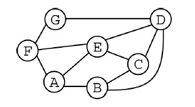

The figure below represents a network of physically linked computers labeled A through G. A line between two computers indicates that the computers can communicate directly with each other. Any information sent between two computers that are not directly connected must go through at least one other computer. For example, information can be sent directly between A and B, but information sent between computers A and C must go through other computers.

What is the minimum number of connections that must be broken or removed in the network before computer E can no longer communicate with computer F?